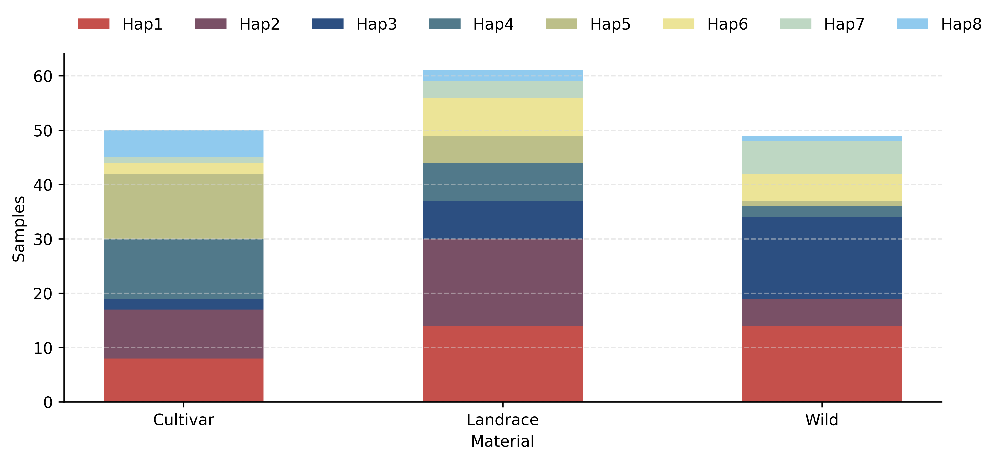
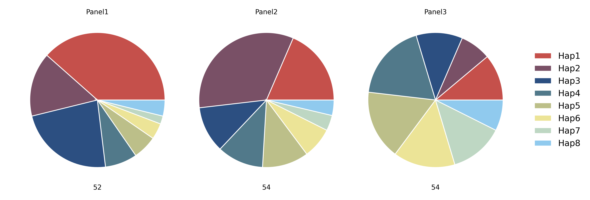
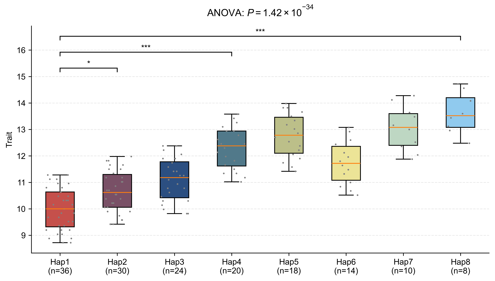
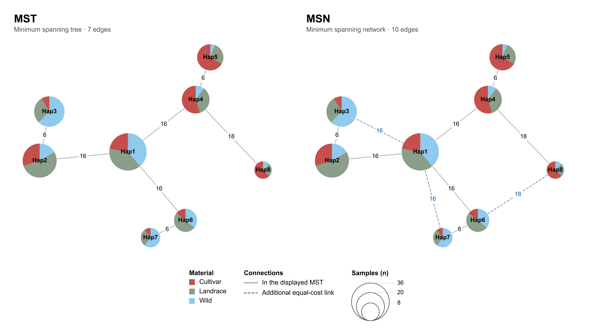

Examples / Synthetic data
Complete graphical examples
These five examples use 160 synthetic samples, eight haplotypes and 48 displayed variants, with Wild, Landrace and Cultivar population assignments. Browse the figures in the gallery.
After installing hastat, run from the repository root:
bash docs/examples/commands.sh
The script creates docs/images/gene_tracks.pdf, docs/images/mst.png
and docs/images/msn.png.
Run the tutorial commands below from docs/examples.
Inputs
| File | Contents |
|---|---|
| gene.table.csv | chrom,pos,ref,alt followed by eight haplotype genotype-state columns; 48 rows. |
| gene.group.csv | Unique samples,haplotypes assignments; supplies sample counts. |
| populations.csv | Sample ID and material type (Wild, Landrace or Cultivar). Used for network pies, allele frequencies, window statistics, and bar and pie counts. |
| phenotypes.csv | samples,Trait numerical observations. |
| genes.gff3 | GeneA, chromosome 1, bases 2,000,001–2,004,000, plus strand and five CDS blocks. |
| hap_colors.csv | Haplotype row colors: group1 contains Hap1–3, group2 contains Hap6–7, and group3 contains Hap4, Hap5 and Hap8. The CSV has no header. |
| annotations.csv | Positions and categories for the 48 plotted variants, with optional labels on two CDS sites. |
| gene.pi.csv, gene.fst.csv | 41 windows from 1,000,001 to 3,004,000 per series: π for each material type and Fst for each pair of types. Window size and step are both 50 kb. |
| gene.vcf | Diploid genotypes for all 160 samples, including the 48 displayed variants and additional flanking sites used in the statistics tracks. |
| gene.vcf.gz and its tabix index | Indexed copy used directly by the gene figure. |
| gene.tajima_d.csv | Tajima's D for the three material types, using the same 41 windows as π and Fst. The last window is clipped at 3,004,000. |
| gene_tracks.toml | Complete gene-plot configuration, including frequency and window tracks. |
| gene.mst.csv, gene.msn.csv | MST and MSN edges generated from the same 48-variant table. |
Coordinates are 1-based inclusive. The 48-site haplotype matrix uses homozygous states 0 (reference) and 2 (alternate); the tool also recognizes 1 (heterozygous) and -1 (missing).
1. Population sample counts

hastat plot bar --sample_hap gene.group.csv --sample_group populations.csv --x_label Material --y_label Samples --width 10 --height 4 -o ../images/bar.png
Bars show haplotype sample counts within each population.
For relative composition, add --calc_percentage and use --y_label Fraction:
that option returns values between 0 and 1.
2. Population composition

hastat plot pie --sample_hap gene.group.csv --sample_group populations.csv --width 11 --height 4 -o ../images/pie.png
Pies show haplotype proportions and sample totals for each population.
3. Trait distributions and comparisons

hastat plot box --sample_hap gene.group.csv --sample_phe phenotypes.csv --method TukeyHSD --comparisons Hap1 Hap2 --comparisons Hap1 Hap4 --comparisons Hap1 Hap8 --width 10 --height 5 -o ../images/box.png
Points show observations; boxes show medians and interquartile ranges. Labels include effective sample counts, and the overall test P value is shown above the plot. Use --x_rotation 45 to rotate labels.
Whiskers extend to the most extreme observations within 1.5 interquartile ranges.
The three displayed comparisons use Tukey-adjusted P values from the full
eight-haplotype family (28 pairwise comparisons). --comparisons selects the
pairs to display. Symbols: * < 0.001, < 0.01, * < 0.05, ns ≥ 0.05.
TukeyHSD assumes independent observations, approximately normal within-group
errors and common within-group variance.
4. Minimum spanning tree and network

Generate both networks from the haplotype table, then draw each network with the same sample and population assignments:
hastat network -t gene.table.csv -m MST -o gene.mst.csv
hastat network -t gene.table.csv -m MSN -o gene.msn.csv
hastat plot network --file gene.mst.csv --sample_hap gene.group.csv --sample_group populations.csv --show_node_label --node_label_size 8.3 --show_edge_label --edge_label_size 8.4 --node_alpha 1 --width 6 --height 6 -o ../images/mst.png
hastat plot network --file gene.msn.csv --sample_hap gene.group.csv --sample_group populations.csv --show_node_label --node_label_size 8.3 --show_edge_label --edge_label_size 8.4 --node_alpha 1 --width 6 --height 6 -o ../images/msn.png
--show_node_label displays haplotype names; --show_edge_label displays
genotype difference counts. Use --edge_label_symbol "|" for tick marks and
--edge_label_size to adjust their size.
The MST has seven edges. The MSN adds three equal-cost alternatives, shown as dashed lines. Node area represents sample count; pie sectors show population composition. Counts use matched samples with valid population assignments.
5. Gene haplotypes with 1 Mb flanks

Use the recommended GeneA TOML with the supplied example inputs, including the indexed VCF. The three statistics CSVs are supplied with the example. To calculate them from the same VCF and population assignments, run:
hastat view -v gene.vcf.gz -r 1:1000001-3004000 -g populations.csv -t pi --size 50000 --step 50000 -o gene
hastat view -v gene.vcf.gz -r 1:1000001-3004000 -g populations.csv -t fst --size 50000 --step 50000 -o gene
hastat view -v gene.vcf.gz -r 1:1000001-3004000 -g populations.csv -t tajima_d --size 50000 --step 50000 -o gene
Draw the complete figure using those CSVs and the recommended configuration:
hastat plot gene --gff genes.gff3 --gene GeneA --up 2000 --down 2000 --width 15 --height 17.17300419287212 --toml gene_tracks.toml -o ../images/gene_tracks.png
[default] supplies shared settings; [GeneA] overrides them for this gene.
Paths are relative to the TOML file. See the TOML reference
for all configuration options.
The gene view includes 2 kb flanks. Statistics tracks use the supplied 50 kb
windows spanning 1 Mb flanks. Pi is displayed in units of 10⁻³; undefined
estimates appear as gaps. shade_gene = true marks the gene interval.
hap_file = "gene" reads gene.table.csv and optionally gene.group.csv for
sample counts. hap_color_file assigns haplotype color categories.
ann_file supplies variant annotations, with an optional label column.
AF uses called alleles from vcf_file, grouped by pop_file. LD is calculated
from all VCF samples for the displayed variants. Set ld_show = false to hide
LD; ld_cmap and ld_colorbar control its palette and color scale.